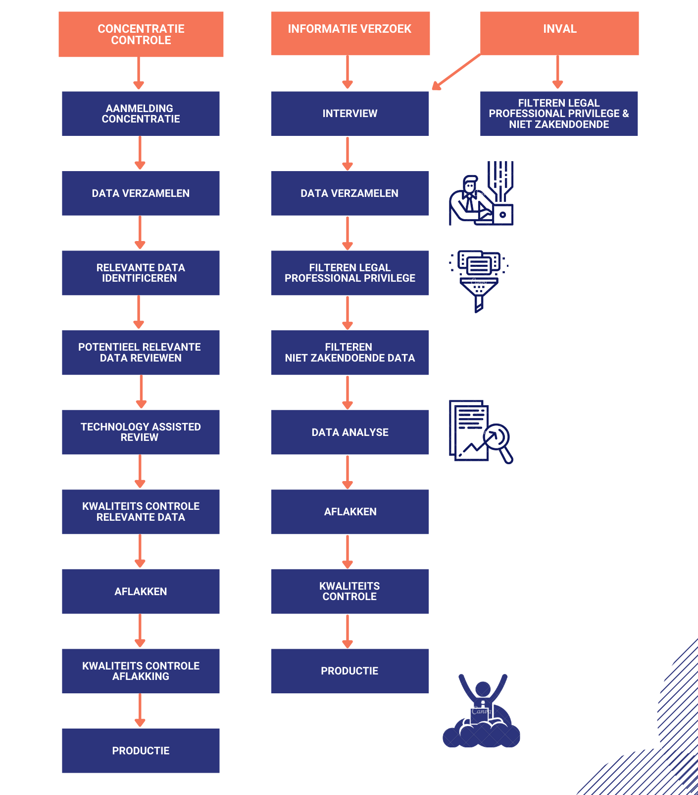

De grondslag van de concentratiecontrole staat in de Verordening (EG) nr. 139/2004. In artikel 3 van de Verordening (EG) nr. 139/2004 is geregeld wat onder concentratie valt:
De concentratiecontrole is er zodat bedrijven door fusies en overnames niet een te grote markpositie krijgen binnen hun markt of de mededinging zullen verhinderen. Als dit wel gebeurt kan dat slecht zijn voor de economie, de consumentenbescherming en ook op termijn voor de democratie. De concentratieverordening is alleen van toepassing op concentraties waarvan aangenomen wordt dat er binnen de Europese interne markt invloed is op de mededinging.
Wanneer er een plan is voor een concentratie, moet dit eerst bij de juiste autoriteit gemeld worden. In het geval dat de bevoegdheid bij de Europese Unie ligt, moet het gemeld worden bij de Europese Commissie. Als de bevoegdheid ligt bij de lidstaat, moet het gemeld worden bij de autoriteit van die lidstaat, bijvoorbeeld de Autoriteit Consument en Markt in Nederland.
De melding van een concentratie kan, in theorie, in twee fasen worden verdeeld. De eerste fase is het onderzoeken van de huidige markt, de positie van de partijen in die markt en hoe de toekomstige concentratie de markt kan beïnvloeden. De tweede fase begint wanneer de autoriteiten verdere vragen gaan stellen over de concentratie. Ze vragen hier bijvoorbeeld naar de contracten van de afgelopen vijf jaar of de jaarrekening van de afgelopen drie jaar.
Wanneer de tweede fase gestart wordt moeten bedrijven een formulier invullen genaamd “Formulier CO”, waar “CO” staat voor “Concentratie”. In dit formulier wordt er gevraagd om informatie en documenten waarmee gekeken wordt of de concentratie aan de mededingingsvereisten voldoet. Dit formulier is te vinden in de Uitvoeringverordening (EU) nr. 1269/2013. De Commissie probeert door middel van dit formulier zoveel mogelijk informatie te krijgen om de concentratie te controleren.
De meeste bedrijven proberen de concentratiecontrole in de eerste fase af te ronden. Ze doen dit, omdat de termijn voor het afronden van de concentratiecontrole voor de autoriteiten wordt uitgesteld, wanneer de tweede fase start. De autoriteiten hebben dan veel meer tijd om te onderzoeken of de concentratie kan plaatsvinden of niet. Om deze reden proberen bedrijven alle relevante gegevens aan te leveren die de autoriteiten hen in de tweede fase en in de eerste fase, zouden kunnen vragen. De bedrijven kunnen hier het Formulier CO gebruiken als richtlijn. Hier moet dan veel data aangeleverd worden, maar ZyLAB kan daarbij helpen. Omdat de meeste data die bedrijven uploaden voor concentratiecontroles al relevant is, ligt de focus bij dit proces bij het data-management van alle data in plaats van data-analyse.
De autoriteiten onderzoeken bedrijven als er verdenking is van het belemmeren of beëindigen van concurrentie zoals geschreven staat in artikel 17 van de Verordening 1/2003. Dit wordt meestal gedaan door middel van het versturen van een informatieverzoek. Hierin vragen de autoriteiten naar informatie en data die mogelijk de verdenking kunnen bewijzen. Op grond van artikel 18 van de Verordening 1/2003 moet het zogenoemde informatieverzoek voldoen aan het volgende, namelijk;
Wanneer de autoriteiten niet genoeg informatie hebben gekregen bij hun eerste verzoek, kunnen ze ook een extra informatieverzoek indienen. Dit kan ook bij concentratiecontroles voorkomen.
Naast een informatieverzoek kunnen de autoriteiten ook een onaangekondigd bedrijfsbezoek doen (ook wel: “inval” of “dawn raid”). Dit wordt meestal gedaan bij verdenking van het achterhouden van informatie. In artikel 20 van de Verordening 1/2003 en artikel 50 Mw kunnen er zogenoemde bedrijfsbezoeken plaatsvinden om meer informatie te verzamelen.
Om de grondrechten van bedrijven en hun werknemers te beschermen bestaan er regels voor de bedrijfsbezoeken. De Instellingswet Autoriteit Consument en Markt geeft de ACM de bevoegdheid om: